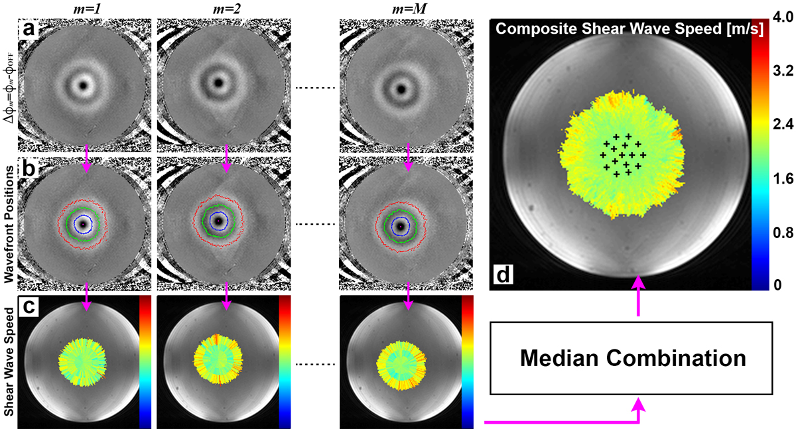

Method
Displacement Encoding
A short impulse of acoustic energy from a focused ultrasound (FUS) device can be used to generate a propagating shear wave whose speed is related to the mechanical properties of the medium. Magnetic resonance (MR) imaging with displacement encoding can be used to image the position of the propagating wave at distinct time-points. Displacement encoding is achieved using motion encoding gradients (MEGs) that are precisely synchronized with the FUS excitation. By using a multi-lobed MEG, the position of the shear wave packet at multiple propagation times can be encoded in a single MR phase image.

The animation above depicts this mechanical excitation and MR encoding scheme. The image on the top left shows the orientation of the tissue sample relative to the FUS device. The propagating shear wave travels in a plane perpendicular to the FUS beam direction. This propagating wave is shown in the figure on the top right. The image on the middle right shows the MR image phase that is encoded from the 4-lobed MEG waveform. The relative timing diagram of the MEG waveform and the FUS excitation is depicted at the bottom of the animation.
Shear Wave Speed Quantification
Shear wave speed can be calculated from the MR image phase by measuring the distance between peak and trough positions. This distance divided by the center-to-center spacing between the MEG lobes provides a measure of the shear wave speed. To improve spatial extent and accuracy of the MRSWE measurement, multiple MR images are acquired such that the position of the FUS excitation is varied for each image. This enables multiple estimates of the shear wave speed where each provides a independent measurement from a slightly different location. Each measurement can be combined to generate a composite shear wave speed map. This multiple-point shear wave speed measurement approach is depicted in the figure below. The top row (a) shows multiple MR phase images where the position of the FUS excitation is varied for each image. Row (b) shows the detected position of the peaks and troughs. Row (c) shows the calculated shear wave speed for each phase image. Image (d) shows the composite shear wave speed map where the black plus symbols mark the locations where the FUS excitations were applied.
